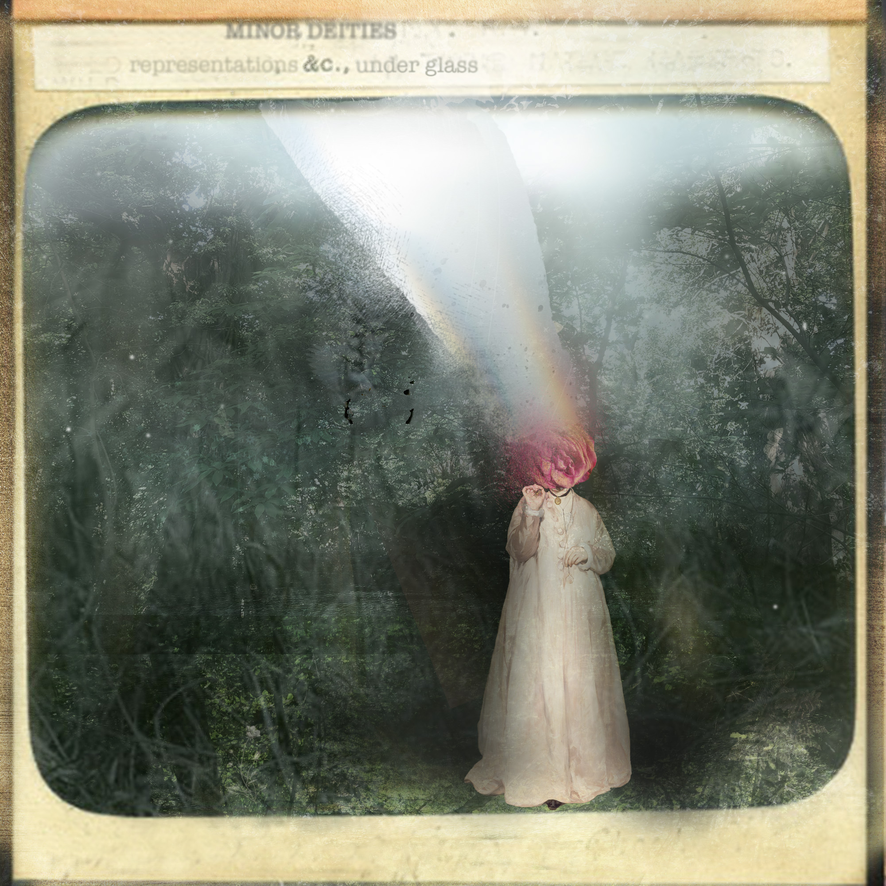
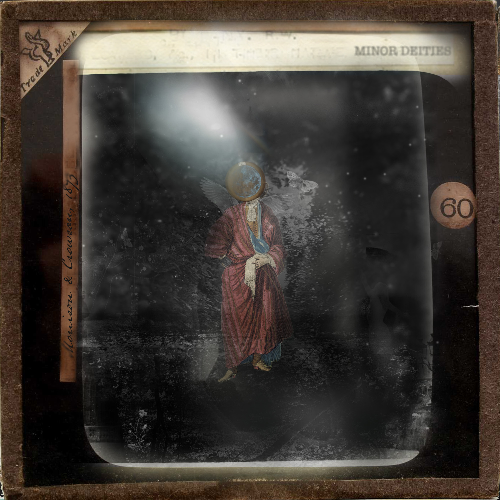

To be preserved is not a synonym for free.

Scroll
Minor Deities were a series of collages shown as Victorian 'Magic Lantern' slides in Hereford in 2023. They are imagined household gods, wayside-shrine presences, the half-glimpsed things that linger in spaces officialdom has stopped looking at closely.
representations &c. borrows the voice of the Victorian catalogue entry. The &c. admits existences beyond the label which we cannot list. It gestures to the plant that outgrows its pot and blurs boundaries: the notes classification cannot hold.
under glass is the data capture of a living thing, a memory preserved by being fixed in a point in space. But the work questions whether to be seen is also to be known. To be preserved is not a synonym for free.

How can arts practice help us understand how the past informs the present and how, in re-telling the past, can this transform our understandings in the present.
In 2023 I was reaching the end of a doctoral journey (now paused) and thinking about critical spatial practice. I think through making, and I began to create digital collages which helped me look at my subject (the critical radical rural) through Lefebvre's triad of space (Henri Lefebvre, The Production of Space, 1974).
I was also working on college data, developing data analysis skills, and I was constantly reminded of critical theory — of how structures tend to preserve what is 'easy', what feels sustaining to the people creating the structures, which can be at odds to the people existing within the structures.
I used Photoshop to manipulate traditional portraiture, using multiple layers to create palimpsests and unreal landscapes. I transformed the figures at the centre of the collage through masks and erasure. Each figure had a slightly different meaning or set of meanings.
I experimented with different backgrounds but ended up iterating similar backgrounds, just erasing different aspects of them or adding one further layer.
The images were always intended to be projected, but this proved more problematic. Printing on glass is prohibitively expensive for a non-funded project, and Victorian lantern projectors in good working order are hard to come by — and come with health and safety issues in the form of naked flames.
In the end, I printed the images out on acetate and framed the acetate in double glass floating frames, offering the illusion of a lantern slide (which also worked with my purpose). Placed on a light source, with a lens underneath, the slides 'projected' on to the glass of a museum box.
If the portrait behaves like a dataset, the method of making and displaying it matters.
The collages use traditional portrait images and transform them. A Victorian portrait was never a neutral record. It encoded social position, gender, propriety, wealth. It encoded not just an image, but the values of whoever commissioned it. It shows only what was classified and what the system valued enough to keep.
The lantern slide transfixes time: pins a moment, fixes it under glass, projects it to an audience who see it as a true record and write it into personal and collective histories. In Jane Rendell's terms, the slides operate as critical spatial practice: work made where art and spatial theory meet, staged as much in the room the projection constructs as on the glass itself. The work counter-balances the transfixing, evoking Lefebvre's half-glimpsed forgotten spaces; the wayside shrine, the overgrown spring, the local deity not quite erased. These are the residual spaces the official image cannot fully contain. They echo Massey's relational space; images from different times and registers are layered, because space and time are constellations of relation rather than fixed coordinates.
the eggshell bones of tiny things are lost
The thinking in these slides fed directly into five questions contributed to Humanity's Last Exam, a benchmark designed to test what current AI cannot answer. The questions passed extensive peer review. Humanities scholars, and women working at small arts colleges, were almost entirely absent from the contributor list. If humanistic thinking is missing from the tests by which AI capability is measured, do we risk creating a closed, impermeable dataset — a narrow representation of space which becomes fixed in our shared social experience?
Nature, 649, 1139–1146 (2026) · DOI: 10.1038/s41586-025-09962-4 · Sarah-Jane Crowson, listed author.
A poem written at the blurred edges of past/present/future
Imagine you're a labyrinth, your veins
stone passages draped velvet-wet with moss.
You hear the ring of footsteps, then these stop
and voices whisper as they find a key
that turns into a snatch of song, a breeze
of fade and shimmer squeezing to become
a wing-like thing that scrapes at hardwood
doors. An amber warmth – a breath – a flare
unlocks a box where secrets carved from games
of chance are trapped in spotted maps of mirror glass.
And then, uncertain candle-shadows drip
their molten wax on golden threads that lead
to yet another wall. Dear Visitor,
what brought you to these lairs of fractal spaces
built up over years, secreting spiral
trails which split and merge like pools of liquid
mercury. I offer – what? An arch
of palimpsests, a history, a vague
attenuated frayed half-world where past
imperfect paper monsters fold themselves
into the safety of this – passé simple – abyss.
Imagine you are a labyrinth, Sarah-Jane Crowson. First published in Sugar House Review. Watch the accompanying animation: youtu.be/uxJn2CTUk-U
This project is the conceptual underpinning for my arts-based and poetic approach to data analysis, participant-centred consultation and hybrid data visualisations. Further work continues under glass: orchids, a Victorian sewing box, terraria of palms and moss — a living data physicalisation, a visual metaphor for the practice of care, and a critical reflection on when classification becomes containment.
With thanks to Ewan Morrison, critical friend and collaborator throughout the development of this work.